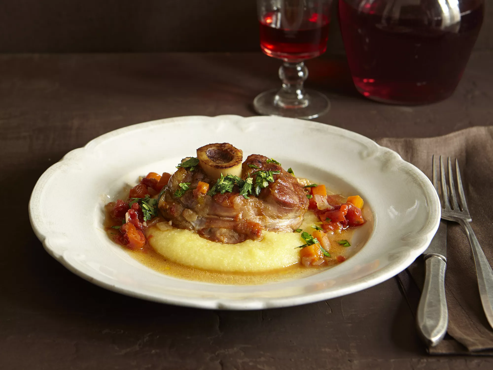

Osso Buco Recipe

Description
Osso buco is a hearty Italian dish made by braising veal shanks in a rich stock with white wine and tomatoes; garnish with a zesty gremolata made with fresh parsley, lemon zest, and garlic for a memorable meal.
Believe it or not, you can make restaurant-worthy osso buco at home — you just need the right recipe. That's where we come in! This traditional osso buco recipe produces flavorful, tender, and absolutely mouthwatering veal shanks every time.
Ingredients
- 2 pounds veal shanks, cut into short lengths
- ¼ cup all-purpose flour
- ¼ cup Butter
- 2 cloves garlic, crushed
- 1 large onion, chopped
- 1 large carrot, chopped
- ⅔ cup dry white wine
- ⅔ cup beef stock
- 1 (14.5 ounce) can diced tomatoes
- salt and pepper to taste
Gremolata:
- ½ cup chopped fresh flat leaf parsley
- 1 clove garlic, minced
- 2 teaspoons grated lemon zest
Steps
- Dust the veal shanks lightly with flour. Melt the butter in a large skillet over medium to medium-high heat. Add the veal, and cook until browned on the outside. Remove to a bowl, and keep warm. Add two cloves of crushed garlic and onion to the skillet; cook and stir until onion is tender. Return the veal to the pan and mix in the carrot and wine. Simmer for 10 minutes.
- Pour in the tomatoes and beef stock, and season with salt and pepper. Cover, and simmer over low heat for 1 1/2 hours, basting the veal every 15 minutes or so. The meat should be tender, but not falling off the bone.
- In a small bowl, mix together the parsley, 1 clove of garlic and lemon zest. Sprinkle the gremolata over the veal just before serving.